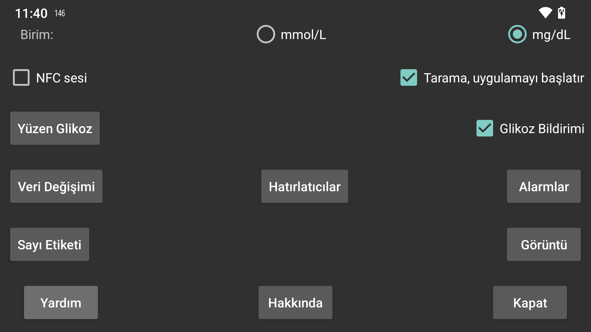

ar be de es fr hi it ja nl pl pt ru tr uk uz zh en
Glikoz değerlerinin mmol/L veya mg/dL cinsinden verilmesini seçin.
Tarama sırasında titreşime ek olarak ses seçin.
İşaretlenirse, uygulama açık olmasa bile NFC üzerinden bir sensörü taradığınızda uygulama başlatılır. Birden fazla uygulamada bu ayar varsa Android, kullanmak istediğiniz uygulamayı seçebileceğiniz bir seçici görüntüler. Birini seçmek işe yaramamışsa daha sonra da işe yaramayabilir. Bu durumda ön planda bir uygulama olmadan tarama yapamazsınız. Juggluco’da bu seçeneği kapatmak en azından başka bir uygulamanın bu şekilde etkinleştirilmesini mümkün kılacaktır.
Eğer root erişiminiz varsa, Abbott'un Librelink uygulamasının NFC aktivasyonunu da devre dışı bırakabilirsiniz (Libre3 ile çalışmaz):
Adb shell veya termux'ta root olun ve şunu yazın:
pm disable com.freestylelibre.app.nl/com.librelink.app.ui.common.NFCScanActivity
Librelink 2.7.1 ve altı sürümlerde şunu yazınız:
pm disable com.freestylelibre.app.nl/com.librelink.app.ui.common.ScanSensorActivity
com.freestylelibre.app.nl Librelink'in Hollanda versiyonudur, bunu kullandığınız versiyonla değiştirilmelisiniz. Adını yazarak bulabilirsiniz (root olmadan bile):
pm list package freestylelibre
Sonrasında, Librelink ön planda olduğunda tarama için kullanmaya devam edebilirsiniz, aksi takdirde başlatılmayacaktır. Librelink 2.5.2 ve üzeri, root algılarsa kendi kendine çöker. Ancak Magisk'te Magisk'i yeniden adlandırarak ve tek tek uygulamaları reddetme listesine (Magisk 24.3) veya Magiskhide'a (Magisk 23.0) ekleyerek root'u kolayca gizleyebilirsiniz. Ayrıca Juggluco'yu da reddetme listesine eklemelisiniz. US Freestyle Libre 2 sensörlerini kullandığınız durumlar haricinde, root kontrolü olmadan Librelink'in eski bir sürümünü de kullanabilirsiniz.
Root olmadan, adb shell altında tüm uygulamayı devre dışı bırakabilirsiniz:
pm disable-user --user 0 com.freestylelibre.app.nl
Abbott müşteri hizmetlerini aramadan önce, aşağıdakileri yaparak yeniden etkinleştirebilirsiniz:
pm enable com.freestylelibre.app.nl
Daha önce "Android durum çubuğundaki Glikoz" olarak adlandırılıyordu. Ayarlanırsa, Bluetooth üzerinden akan glikoz değerleri bir bildirimde ve Android durum çubuğunda sessizce görüntülenir. Kapatırsanız, bir sayı yerine bir nokta gösterilir ve bildirim "Sensöre bağlanmak için" veya "Veri alışverişi yapmak için"den başka bir şey söylemez. Arka planda çalışmaya devam eden bir uygulama, Android tarafından böyle bir bildirime sahip olmak zorunda bırakılır (aksi takdirde Android tarafından kolayca durdurulur). Juggluco bildirimi yalnızca "Sensör Bluetooth üzerinden" kapalı olduğunda ve hiçbir ayna bağlantısı olmadığında kapatır.
Bazı telefonlarda, glikoz değeri yalnızca bildirim ayarlarını değiştirdikten sonra durum çubuğunda gösterilir. Örneğin Realme GT 5G'de, Uygulama Listesi > Juggluco > Bildirimleri Yönet'e gitmeniz, Glikoz Bildirimi'ne tıklamanız ve "Sessiz'e Ayarla"yı kapatmanız gerekir. "Durum çubuğunda görüntüle" artık açık olarak gösterilecektir.
Ayrıca orta sol menüde Bildir'i seçerek bir android bildirimi alabilirsiniz. Bu durumda bildirim, bu şekilde yapılandırılmışsa bazı akıllı saatlere gönderilecektir. Bu Garmin saatleriyle çalışır, başka bir şeyle çalışıp çalışmadığını bilmiyorum. Alarmlar da bildirim üretir.
Bunu açtığınızda, ön planda hangi uygulama olursa olsun, ekranda sürekli olarak mevcut glikoz değerine sahip küçük bir ekran bulunur. İlk kez açtığınızda, Juggluco'ya diğer uygulamaların üzerinde görüntüleme izni vermeniz gereken bir uygulama listesine yönlendirileceksiniz.
Yüksek ve Düşük Glikoz Alarmları, Sinyal Kaybı Alarmı ve Mevcut Veri Bildirimi’ni ayarlayın.
Miktarlar için kullanılan etiketleri belirtin. İnsülin dozları, karbonhidrat tüketimi ve futbol oynamaya harcanan saatler gibi miktarları ayarlamak için hangi etiketlerin kullanılacağını belirlemek üzere bu ekrana gidin. Ayrıca Garmin saat uygulaması Kerfstok'u da kullanıyorsanız, bu etiketler saat uygulamasına gönderilir.
Juggluco'dan diğer uygulamalara veya sunuculara veri göndermenin farklı yolları. (Verileri saatlere göndermek için sol menüye gidin > Saat)
Belirli bir zaman dilimi içerisinde belirli miktarda yiyecek veya ilaç girmediğinizde alarmın çalmasını ayarlayın.
Google Taraması
Sibionics sensör paketlerindeki ve Dexcom G7/ONE+ aplikatörlerindeki veri matrisini ve orta sol menüdeki QR kodunu tarayın→Google kod tarayıcısıyla yansıtın. İşaretli değilse, zXing kullanılır. Çoğu cihazda, Google taraması daha iyi çalışır, ancak bazen çalışmaz. Bir hatayla başarısız olduğunda, zXing her zaman kullanılır, ancak bazen Google taraması bir hata döndürmeden de çalışmayabilir.
Hedef aralığından dile kadar verilerin nasıl görüntüleneceğiyle ilgili her türlü ayara ulaşın.